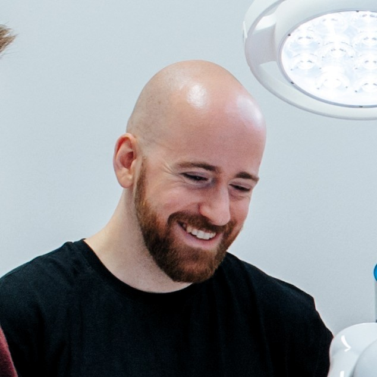

|
Paul Maria Scheikl I'm a doctoral candidate in the Surgical Planning and Robotic Cognition Lab (SPARC) at the Friedrich-Alexander-University Erlangen-Nürnberg in Germany. |
 |
{kind=link}
ResearchI'm interested in robotics, visuomotor learning, and deformable object simulation. Most of my research is about learning visuomotor policies for deformable object manipulation for robot-assisted surgery. |
|
|
Movement Primitive Diffusion: Learning Gentle Robotic Manipulation of Deformable Objects
Paul Maria Scheikl, Nicolas Schreiber, Christoph Haas, Niklas Freymuth, Gerhard Neumann, Rudolf Lioutikov, Franziska Mathis-Ullrich. Currently under Review, 2024 Combines the versatility of diffusion-based imitation learning with the high-quality motion generation capabilities of Probabilistic Dynamic Movement Primitives. Achieves gentle manipulation of deformable objects, while maintaining data efficiency critical for surgical applications where demonstration data is scarce. Evaluated in simulation and on real robotic hardware. |

|
LapGym - An Open Source Framework for Reinforcement Learning in Robot-Assisted Laparoscopic Surgery
Paul Maria Scheikl, Balázs Gyenes, Rayan Younis, Christoph Haas, Gerhard Neumann, Martin Wagner, Franziska Mathis-Ullrich. Journal of Machine Learning Research (JMLR), 2023 lap_gym / sofa_env Reinforcement learning framework for robot-assisted laparoscopic surgery. Builds on the open-source, fast, interactive FEM simulation backend SOFA. Deformable object manipulation, topological changes (cutting), grasping, image observation modalities (RGB, depth, segmentation, point clouds). |

|
Sim-to-Real Transfer for Visual Reinforcement Learning of Deformable Object Manipulation for Robot-Assisted Surgery
Paul Maria Scheikl, Eleonora Tagliabue, Balázs Gyenes, Martin Wagner, Diego Dall'Alba, Paolo Fiorini, Franziska Mathis-Ullrich. IEEE Robotics and Automation Letters (RA-L), 2022 Training a visumotor policy for deformable object manipulation in simulation with reinforcement learning. Transferring the policy to the real world with the daVinci Research Kit using unpaired image-to-image translation. |

|
Cooperative assistance in robotic surgery through multi-agent reinforcement learning
Paul Maria Scheikl, Balázs Gyenes, Tornike Davitashvili, Rayan Younis, André Schulze, Beat P Müller-Stich, Gerhard Neumann, Martin Wagner, Franziska Mathis-Ullrich. IEEE/RSJ International Conference on Intelligent Robots and Systems (IROS), 2021 Learns decentralized policies without a human in the loop with multi-agent reinforcement learning. Evaluates the learned policies in cooperation with a human surgeon for deformable object manipulation. |

|
Deep learning for semantic segmentation of organs and tissues in laparoscopic surgery
Paul Maria Scheikl, Stefan Laschewski, Anna Kisilenko, Tornike Davitashvili, Benjamin Müller, Manuela Capek, Beat P Müller-Stich, Martin Wagner, Franziska Mathis-Ullrich. Current Directions in Biomedical Engineering (CDBE), 2020 Evaluates several architectures and training strategies for semantic segmentation of organs and tissues in laparoscopic surgery. |